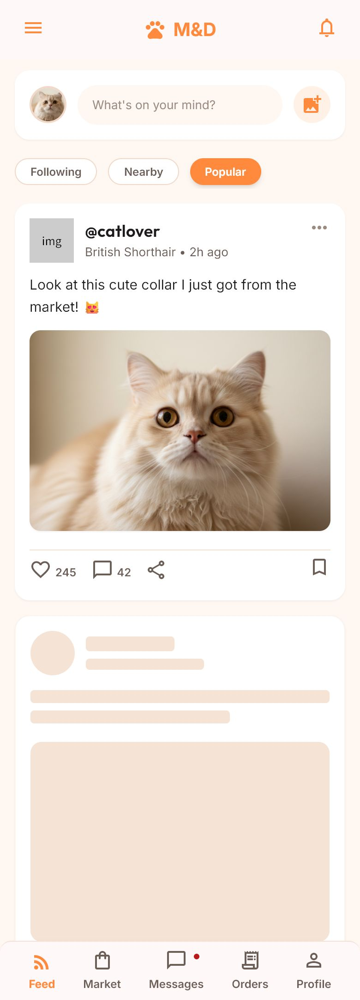
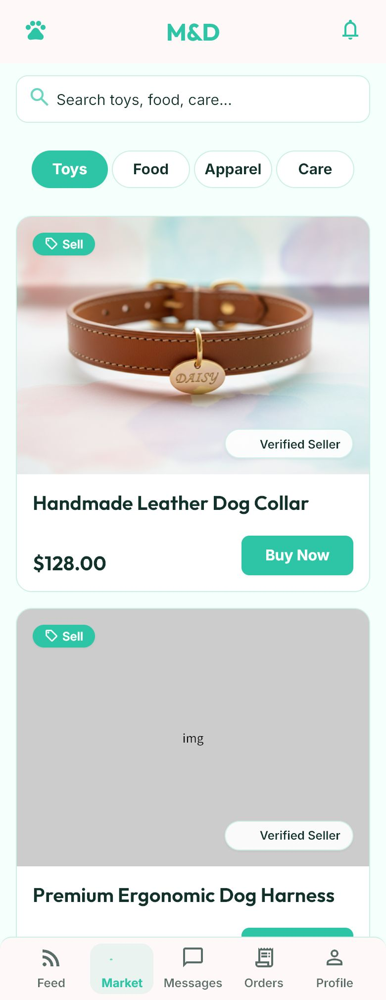
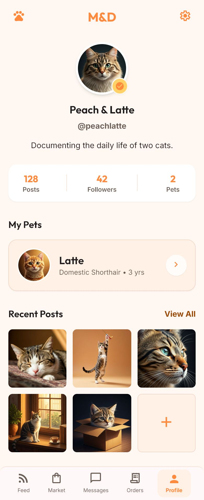
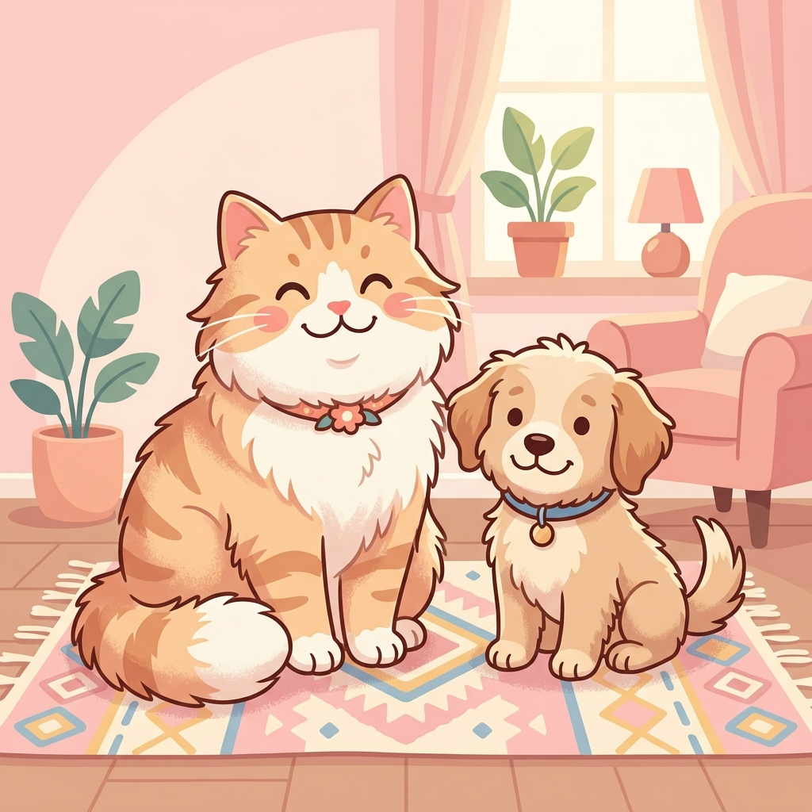

Mobile Home
Mobile Market
Mobile Profile Neutral Board
Neutral BoardHoney Feed
Social feed keeps the mobile composer-first hierarchy.
Desktop adds scanable rails but does not add care reminders or unrelated modules.
 @catlover
@catloverLook at this cute collar I just got from the market!
Morning window inspection passed. Peach owns the soft blanket now.
“The collar color is perfect for ginger cats.”
img
Premium Ergonomic Dog Harness$86.00Weekend cat sitter near Jing'an$36.00Verified seller · Credit 99 · Contact Seller and Save actions stay visible.
1 order needs Pay Now or Cancel Order.
Confirm Receipt stays visible on buyer rows.
Marketplace trust follows the remote component rules.
| Order | Item | Role | Status | Action |
|---|---|---|---|---|
| #A102 | Leather Dog Collar | Buyer | pending_payment | Pay Now |
| #A103 | Cat sitter near Jing'an | Seller | paid | Contact Buyer |
| #A104 | Premium Dog Harness | Buyer | shipped | Confirm Receipt |
Peach · British Shorthair · Picnic background
Sunny window spot claimed and approved.
Cat tunnel, handmade collar, weekend sitter.
Verified buyer · 6 completed orders

M&D · meow & doggie
Login keeps the cat-first brand moment.
Desktop auth uses the approved Honey language, the existing hero imagery, and account fields that match the production login/register flow.
Restrained, professional, not cute.
| ID | Event | Status |
|---|---|---|
| #A102 | User Login | OK |
| #A103 | Bad Sync | FAIL |